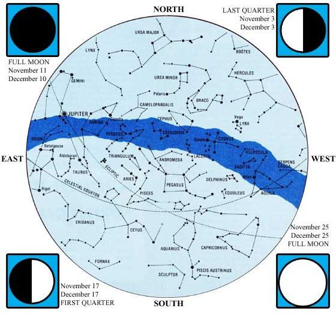
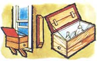
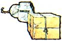
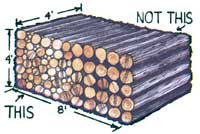
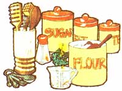
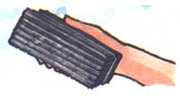
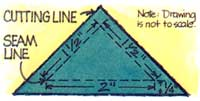
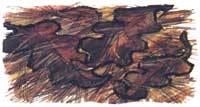
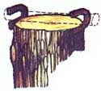

This may be the first generation to set foot on the moon and shoot rocket probes into the reaches of outer space. But, man for man and woman for woman, great granddad and great grandmother-or, for that matter, almost any primitive tribe of almost any past age-knew a lot more about identifying the stars and planets in the night sky than most of us currently do.
And so, with the help of Guy Ottewell (author of Astronomical Calendar 1978, available for $5.95 from the Department of Physics, Furman University, Greenville, South Carolina 29613), MOTHER is going to try to change all that.
The foldouts in Issue Nos. 43 through 48 are being printed in the form of an old-time almanac and star chart. Save the series. Practice with it (directions for using the maps appear In MOTHER NO. 43). And, if you're a typical child of our modern TV-dominated society, you should know one heck of a lot more about the heavens by the end of 1977 than you did at the beginning.
1 Around 9-10 p.m. in November the Milky Way spans the sky from due east to due west.
5 The Taurid meteors peak around the 3rd to the 13th. Rate: possibly 10 per hour.
14 The Andromedid meteors-a famous old meteor shower which over the years has faded-will begin from a radiant in the south.
17 The Leonid meteors are not a reliable shower, but they're occasionally spectacular. Look towards the northeast.
20 Once you find Mercury in the evening, it's possible (though difficult) with binoculars to spot Neptune as a dim, greenish "star" just to the north of it. In the morning, it's also possible (but, again, difficult) to see Venus and-with binoculars-to find Uranus as a dim, greenish "star" to its south.
22 The sun enters Scorpius. The sun enters the astrological sign Sagittarius,
29 The sun enters Ophiuchus.
5 Earliest sunset about 40° north.
14 The Geminid meteors-one of the best and most reliable showers of the year-can be seen after the moon sets (which it does fairly early in the evening). Rate: up to 50 per hour.
18 The sun enters Sagittarius.
21 At the winter solstice, the earth's north pole is tilted as far (23-1/2°) away from the sun as it ever gets. In the Northern Hemisphere, days are shortest and nights are longest of any time during the year ... winter officially begins. The opposite occurs in the Southern Hemisphere.
21 The sun enters the astrological sign Capricornus.
22 Jupiter is at opposition (that is, the earth passes between it and the sun) and is at its nearest and brightest position for viewing.
25 The moon passes south of Jupiter, which will be the only object visible near the moon. Christmas.
Though it's easy to cite facts about the sizes of-and the distances between-bodies in space, it's quite difficult to grasp the meaning of these fantastic figures. The Thousand Yard Model, however, does an excellent job of transforming knowledge into comprehension ... and the discoveries you'll make by participating in this exercise can be truly awesome.
Begin by collecting the following items to represent the planets and the central star in our solar system: an 8-inch-diameter ball (the sun), three pinheads (Mercury, Mars, and Pluto), two peppercorns (Venus and Earth), a chestnut or pecan (Jupiter), an acorn (Saturn), and two peanuts (Uranus and Neptune). So that nothing gets lost, fasten all the smaller objects onto labeled cards and arrange them according to their distance from the sun (starting with the nearest- Mercury -and proceeding through Venus, Earth, Mars, Jupiter, Saturn, Uranus, Neptune, and Pluto).
At first you'll probably be astonished at the great contrast in the sizes of the sun and the planets (it's now easy to see how these nine bodies-combined-comprise only 1/1,000 of the material in our solar system). But the elements are roughly to scale: One inch in the model represents 100,000 miles in reality ... that is, the 8-inch sun is actually close to 800,000 miles in diameter, while the .08inch peppercorn-Earth-measures only 8,000 miles across.
Now go outside to a spot where you can walk 1,000 yards in a reasonably straight line (you can double back at Uranus, if necessary, but the effect is not so dramatic). Place the sun ball on the ground, and begin your march. Note that each pace-which should be approximately one yard-in this scheme represents 3,600,000 miles!
Take 10 paces and place the pinhead that represents Mercury on the ground. Walk 9 more paces and drop Venus. Then proceed 7 paces further and lay down the peppercorn for Earth. Isn't it amazing that the sun-represented by the small 8-inch ball 26 yards away-has the power not only to warm our planet, but to hold it in orbit? The distance seems even more immense when you realize that our moon would (on this scale) be a mere grain of salt situated 2.4 inches from the earth!
Continue for another 13 paces to reach the location of Mars ... then marvel at the substantially larger leap-94 paces-to the "giant planet" Jupiter. From here, the distances become even greater: 114 paces to Saturn, 253 more to Uranus, an additional 278 steps to Neptune, and a final 222 yards to Pluto.
By now, you've marched more than half a mile! Look in the direction of the sun ball (not visible even with binoculars)-and then down at the tiny pinhead Pluto-and you'll experience a wonder words can't describe.
Of course, the solar system doesn't end with Pluto ... a thin haze of dust-and comets formed from that dust-exists beyond the furthermost planet. The true limit of our solar system, in fact, would be marked in the model not 1,000 yards but 2,000 miles from the sun ball (about two lightyears) ... that is, halfway between our sun and its nearest star (Proxima Centauri).
And if that distance sounds inconceivable, imagine our 8-inch sun ball separated by at least 4,000 miles from any other similar sized body . . . and realize that all stars-when put in our "one inch equals 100,000 miles" model-are situated about that same distance apart. Ponder those facts one eveninq as you view the - bright dense band of stars in our galaxy known as the Milky Way. It's truly mind-boggling!
Though few folks these days live without electricity, there are times when weather conditions cut off the "juice" for long periods of time. If such powerless stretches are common in your area, you might want to make a version of the old-fashioned window refrigerator (also useful for winter camping) to keep perishables cool in the colder months.
Just take a good, stout wooden box (a grocery box works well) and-with hinges-attach a lid (which can be two or more pieces of box wood fastened together with cross strips). Then drive a nail into one end of the cover-and another into the same end of the box-and fasten a piece of heavy cord or light metal chain to them to keep the top from failing backwards when it's opened.
For ventilation, simply drill a small hole in each end of the cooler and cover the openings with wire screen or cheesecloth (which will allow constant circulation of fresh air while keeping out insects). It's also wise to tack a piece of polyethylene, oilcloth, or other waterproof material over the top to keep out the rain.
Now mount the cooler outside on one of the kitchen windowsills (with braces, of course, propped against the side of the house). Then when you want some refrigerated goodies, all you have to do is raise the window and reach in!
It can be frustrating to prepare holiday gifts for the mail, but here's a tip that might make the task a bit easier:
Dampen string before using it to tie packages. The string then will not slip during the work and-as it dries-it will shrink itself tighter than you could possibly have pulled it.
Although a cord of wood is supposed to be a fixed measure of 128 cubic feet (a stack 8' long by 4' wide by 4' high), this "precise" specification leaves much to be desired. Due to the open spaces between a few large round logs-for instance-the buyer of a cord of wood made up of such timbers will receive somewhat less for his money than the purchaser of a cord composed of carefully selected and closely stacked random-sized logs. It stands to reason, then, that you'll get more for your money if you always specify that some small kindling sticks be mixed with the larger-diameter timbers in any cord of wood you buy.
You should also keep in mind the fact that a cord of softwood usually weighs out to slightly more than a ton while the same measure of hardwood tips the scales in the neighborhood of 1-3/4 tons. Hardwood, obviously, is the better bargain.
Following recipes that someone else has developed is a lot of fun, but conjuring up food formulations of your own can be even more exciting ... though sometimes disastrous.
To keep the excitement of accomplishment as high as possible-and the drag of disaster as low as reasonably can be expected-keep the following general rules of thumb in mind the next time you're tempted to experiment.
1 cup of liquid to I cup of flour for pour batters.
1 cup of liquid to 2 cups of flour for drop batters.
1 cup of liquid to 3 cups of flour for dough.
1/3 to 2 or more cakes of compressed yeast softened in 1/2 cup of water to 2 cups of liquid (1/3 yeast cake to 2 cups of liquid is used in bread mixed at night, 1 cake or more can be added to bread mixed in the morning, according to the time available for rising. By using several yeast cakes to 2 cups of liquid, bread may be baked in three or four hours from time of mixing).
1/2 cup of liquid yeast to 2 cups of liquid.
1 teaspoon of soda and 3-1/2 level teaspoons of cream of tartar to 4 cups of flour.
2 teaspoons of baking powder to 1 cup of flour, when eggs are not used.
1 teaspoon of soda to 2 cups of thick sour milk.
1 teaspoon of soda to 1 cup of molasses.
1/4 teaspoon of salt to 4 cups of milk for custards.
1/4 teaspoon of salt to I cup, or 1 teaspoon to 4 cups, of sauce or soup.
I teaspoon of flavoring extract to 4 cups of custard, or cream.
1 tablespoon of flavoring extract to 4 cups of mixture to be frozen.
2/3 cup, or less, of sugar to 4 cups of milk for custards, etc.
1 cup sugar to 4 cups milk or cream for ice cream.
4 eggs to 4 cups milk for plain cup custard.
6 to 8 eggs to 4 cups milk for molded custards.
1/4 package (or half an ounce) of gelatin to 2 cups (scant) of liquid.
3 cups water, or milk, or stock, to I cup rice.
1 cup of cooked meat or fish cut in cubes to 3/4-1 cup of sauce.
Meat from 3-1/2-pound chicken equals about 2 cups (or 1 pound).
On any morning when your car or truck windshield steams up on you, a clean blackboard eraser kept in the glove compartment can be quite handy for wipinq off the moisture. The eraser is less bulky than a cloth, and doesn't shed lint on the glass.
Quilting-which used to be a necessary household skill-has now become an enjoyable pastime for many homemakers. And for the more advanced quilters among our readers, here's a new design-similar to the tree which appears on MOTHER's masthead page-to help while away those long winter evenings.
The measurements given are for a standard 14" square ... but consider the size of your bed before cutting any material and adjust figures accordingly. Thirty 14" squares (whether they're all decorated, or half are plain) will yield an 84" X 70" quilt.
Start by drawing full-size pattern pieces on some lightweight scrap cardboard. You'll need large 1-1 /2" square, a smaller 1 " square, and · right triangle measuring 1-1/2" X 1-1/2" X 2". Next, sketch in a cutting line 1/4" beyond these seam lines all around the outside (see drawing). Now cut out your pattern pieces, and label each one with the number of times the piece will be repeated in the quilt block (that is, I brown square, 19 large green squares ... 4 small green squares ... 8 brown triangles, and 10 green triangles).
After cutting the material, simply stitch the geometric sections together as they're arranged in the picture (taking up the 1/4" seam allowances). Then sew the entire design to a plain block, and turn under the outer edges for a finished look. Finally, quilt the design.
It'll take quite some time to complete this project, but the end result should be truly beautiful!
Most plants require some sort of winter protection to survive ... even evergreens turn brown and often die during severe cold spells because their roots are unable to draw enough moisture from the frozen ground to replace that lost through their needles. The best kind of protection-by far-is a winter mulch.
Snow itself is an excellent mulch, but it can't be relied upon over much of the country to provide continuous coverage during the winter. Too often a mid-winter thaw-followed by a cold spell-causes frost to sink deep into the ground.
Other mulching materials-layers of leaves, pine straw, etc.-should be prepared during the autumn months. However, you should wait until the ground has been frozen slightly before applying them. And if snow falls before you get the job done, mulch right over it.
With the proper surface covering, the ground will freeze little-if at all-so that the roots of plants and the organisms in the soil around them will remain reasonably active until warmer spring weather. Don't be in a hurry to remove the mulch, though, when the weather warms ... do so gradually, and only as the plants start their new growth.
Cutting up kindling can often be a tricky job ... unless you know how to modify a stable chopping block so that it'll keep small pieces of wood from flying into your face (or all over creation) every time you whack away with your hatchet or axe.
Take a good-sized, steady section from a tree trunk and nail a couple of horseshoes exactly opposite each other near its top. Then lay the logs or boards in the claws of the horseshoes and swing away.
|
 |
 |
 |
|
 |
 |
 |
|
|
 |
 |
|
 |
|
|